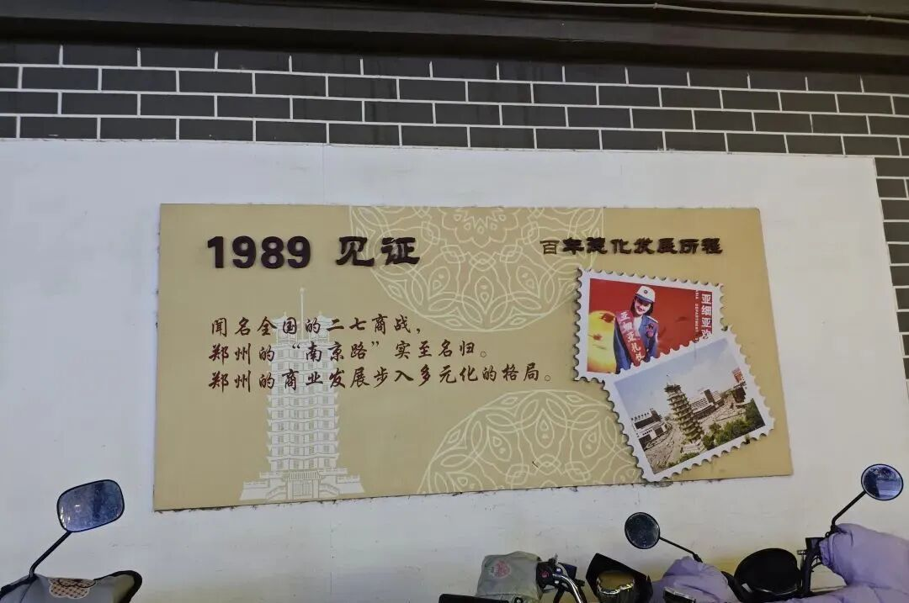
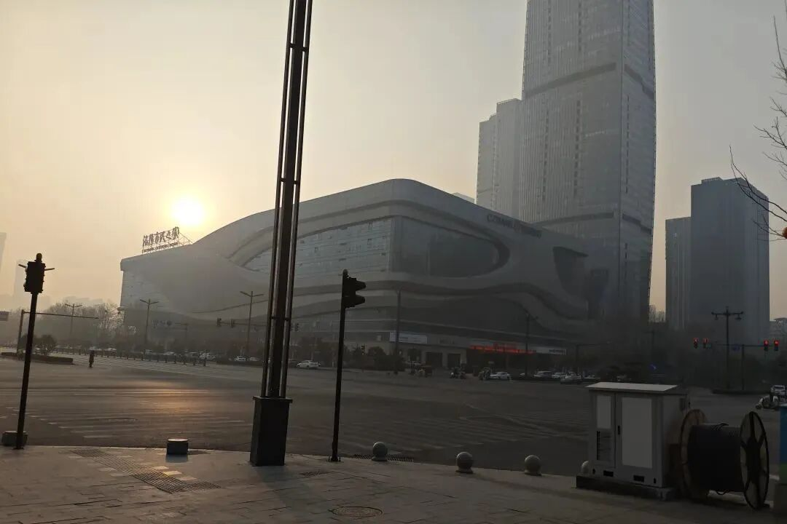
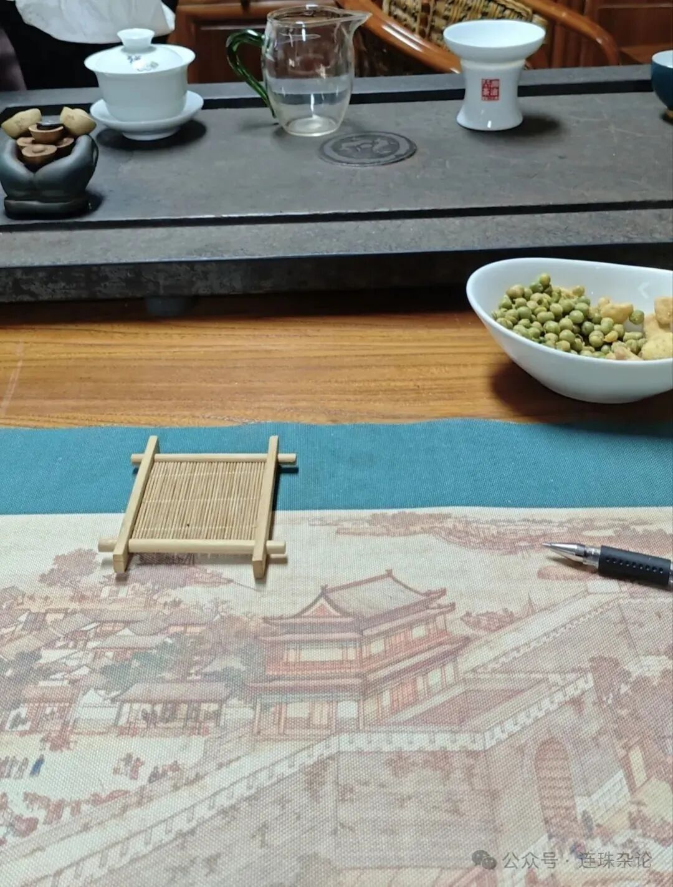
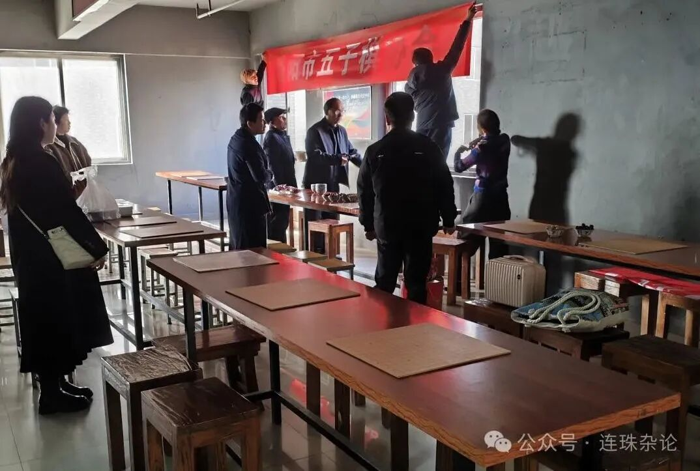
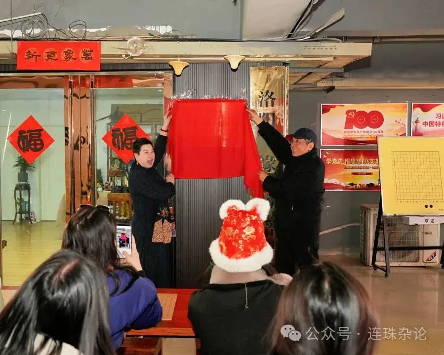
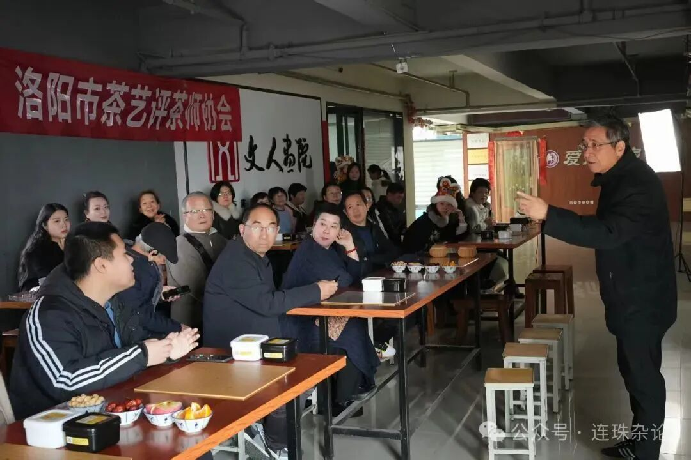
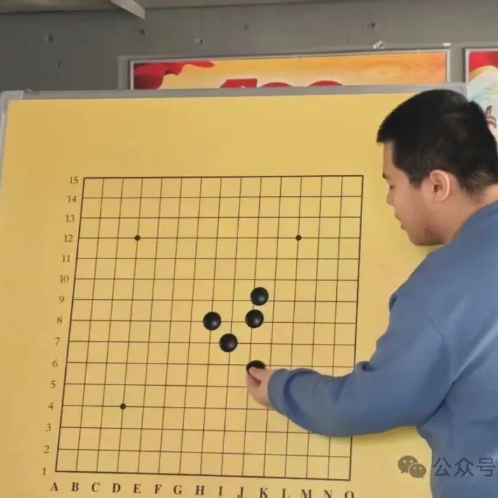
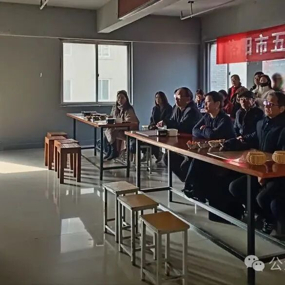
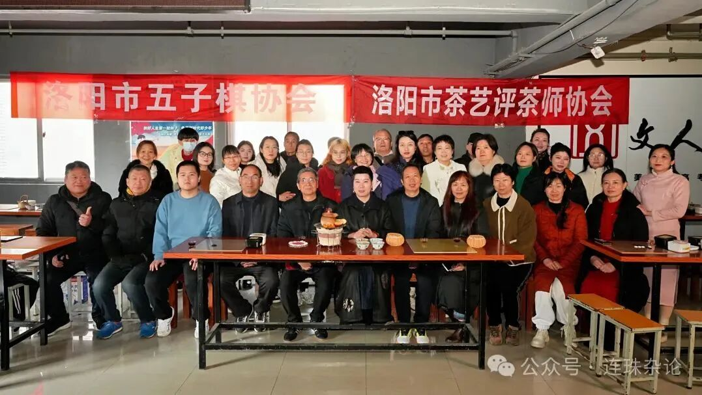
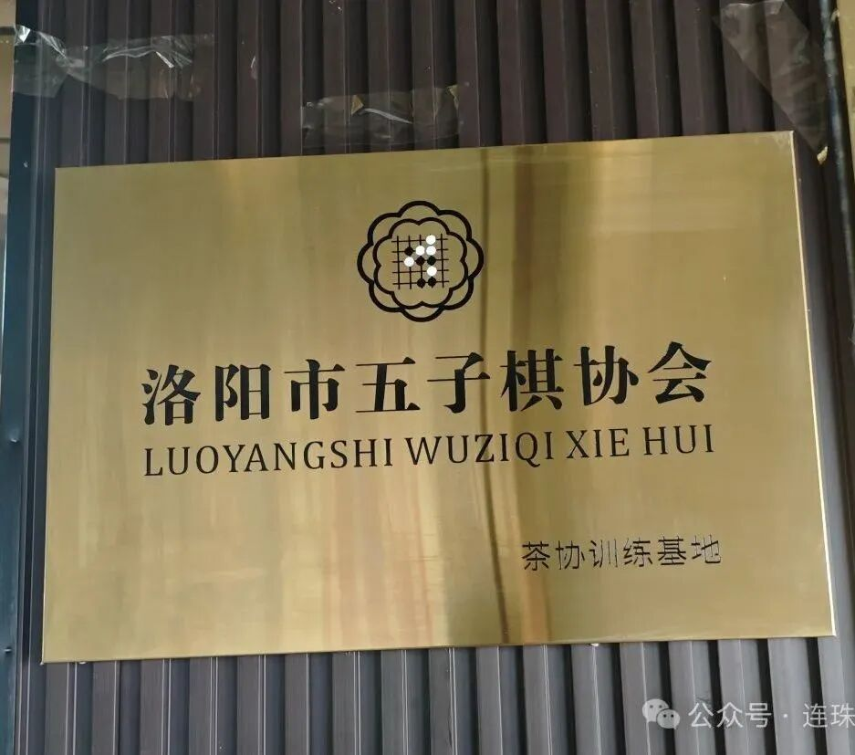

活动记｜2025洛阳市五子棋协会茶训基地授牌仪式
市民之家的恩赐之地
弁言：以后“记录”相关的文章基本都会延续培训记｜2024河南省五子棋三级裁判员培训班:桂花墙上的梦 优皮士般的路的文风，后现代式。或许阅读时，需要更多解读和联想的时间，但惟愿以文载道，尝试一种后现代主义五子棋文学。以上。
回到诠释激动的二七广场，如同抛弃过的上千个黎明。日出唤醒尘封的西行漫记，答案深埋在轨道的静谧雾霭里。
就像孤独一人的远方，伴着春暖花开的流浪。
走走停停，洛河南北更替的新老。伫在新琅琊的冰糖街道。


地铁到站了，闸机开合出打谱的声息。一出大门，“南城新区”感扑面而来。宛如北城新区附近的临沂，中心的新鲜与狂野相得益彰。未知的棋手们敲打着灵魂的铁鼓，促使惬意的涡轮再次增压。街边汉堡店里放着无人问津的流行音乐，如同放浪街道上步伐褴褛的尘埃。恍惚间楼上茶馆的落子声与煮水声呼之欲出，褪去了流行音乐的喧嚣与浮躁。于是按图索骥，顺势登上顶楼，试图摸索连珠之城的边界。然而，来者仍需拭目以待。暖城凯旋的南阳初段在这吗？尚未回应。何以稍安勿躁？不妨坐而观茶。处恩赐之地，享连珠文明。

是否已将棋道与茶道融贯入印记？无声的念想从偏僻的暖城传来。来者赴会了。爱好者们从十级开始，每登一楼，宛如跃升一级。连珠生活的壮丽便从这欢声笑语的准备中显现，与千年之外隋唐城宽鳍鱲的水塘嬉戏形成一支跨时代的交响曲。微信上陌生的名字现了真身，和蔼的一切化作挺拔的老槭树，在生命的奔腾当中吟唱。赞许与期盼在伊比萨上扬帆起航，绝非肉麻的相互吹捧。落叶金黄，但并未苍老。

准备就绪。五子棋协会执行会长何全良老师与茶艺师协会会长梁径敏老师共同揭开新时代的序幕。只见梁会长提壶注水的弧线幻化成何会长摆出的浦月定式，玉露琼浆在舌尖翻涌，宛如连珠棋大开大合的生死局搏杀，促使围观者目瞪口呆。挂在月桂树上的幻梦来到这里，轸恤般地凝视着一双双拍手叫好的眼睛。连珠之城的人们拥有了这片栖息地，告别了未来的纠结和疑迷。不愧为神都盛宴，炉火正盛，茶棋共舞。方向标式的接力棒从食指上传来，给予Z世代重任的目光凛冽而炽热。


两位会长的发言深入人心，说震耳发聩恐言过其实，但入木三分处可见一斑。这便是准备的功劳。此时我发觉暖城归来的行者，但已没有时间叫醒那种彷徨的生活。轮到我讲解五子棋知识了。而我的准备则显得词不达意——当禁手规则穿着加塔利式的衣服来到教室，与接触结构主义的学者欢聚一堂，难免出现千万张坚定而迷惑的脸。讲解的养分无法全部供给生长。庆幸补充的两块肥料能够弥补缺陷。连珠场上也是这样，倘若东波斯油灯中的定式库稍显羞涩，那就早早摒弃，用达尔文进化论的强大算力一决高下。虽然在这里，逼抓禁手的高级手段或未曾谙熟，但被烟卷烧焦的无禁自由取胜法仍被广泛接受。所以，讲解也算是一场金字塔下的歌唱。


随后安排的快速对局与棋局精讲，执白面临无禁手大山，虽已发觉反击成胜的线路，但无心取胜，只愿速败一盘，延续这份完美的快乐。惟愿禁手观念鞭辟入里。喝着棋事煮沸的茶汤，领悟棋茶共鸣的苦涩，终有回甘。而暖城归来者的无措有目共睹。连珠之光如此耀眼，却只能坐享认可褴褛的世界。是否继续暗自蹒跚？虽姗姗来迟，事与愿违，然心意已至，览物之情，不言而喻。

活动结束。人走茶凉，被窗外阳光直射的茶壶上浮现出颗颗易忘之茧，宛如棋茶文化传承中步步为赢的VCF，招招制胜，圆满成功。街口说笑的孩子，春季减价的服装店，和往常一样存在着。再登市民之家站，搭一辆车回东方。暖城之子也敲碎了孤独迷茫牌理想机，打算在弯月亮亲吻白桥灯塔的时刻踏上南去的空寂列车返回高尚之地。他提供的礼物琳琅满目，鄂尔多斯特产，不远千里相会。

现在发生的一切都将成为过去，璀璨的事件也不过是印记。望舟车劳顿的消耗有供给之处，后会有期，再在这恩赐之地聆听茶棋的交响曲。
2025年2月27日 完篇
纪念2025年2月23日 洛阳五子棋协会茶训基地授牌仪式